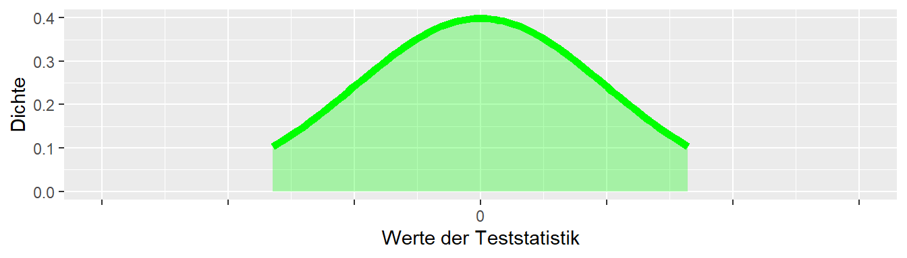

10 Hypothesentests
10.1 Irttumswahrscheinlichkeiten
Im vorhergehenden Kapitel wurden das Konzept eines signifikanten Ergebnis entwickelt. Unter diesem Aspekt war die Erstellung einer \(H_0\)-Hypothese und deren Ablehnung oder Beibehaltung zentral. Im Folgenden wird nun ein Ansatz entwickelt, bei dem die Möglichkeit sich zu irren zentral ist. Der Ansatz geht auf die Arbeiten von Neyman und Pearson (1933) zurück, die in etwa zur gleichen Zeit wie diejenigen von Fisher entwickelt wurden.
Um zu entscheiden ob ein statistische signifikantes Ergebnis vorliegt, wird eine \(H_0\)-Hypothese angesetzt und zu dieser Hypothese wird basierend auf dem beobachteten Wert ein p-Wert berechnet. Wenn der p-Wert klein ist, dann wird dies als Evidenz gegen die \(H_0\) angesehen und diese wird abgelehnt. Nun kann es aber sein, dass selbst unter der \(H_0\), d.h. wenn die \(H_0\) korrekt ist, ein p-Wert beobachtet wird der unter der Schwelle von \(0.05 = 5\%\) liegt. Wenn das Experiment \(100\)-mal wiederholt wird und die \(H_0\) zutrifft, dann würden etwa \(5\) Fälle eintreten, bei denen der beobachtete p-Wert kleiner als \(0.05\) ist. Das heißt, in diesen \(5\) Fällen würde man sich irren. Der Ansatz von Neyman und Pearson (1933) benutzt diese Einsicht nun um einen Entscheidungsregel zu entwickeln, welche die Wahrscheinlichkeit sich über mehrfache Wiederholungen eines Experiments zu irren kontrolliert. Es wird versucht die Irrtumswahrscheinlichkeit zu minimieren bzw. unter einem festgesetzten Niveau zu halten. Die Irrtumswahrscheinlichkeit wird mit dem Symbol \(\alpha\) gekennzeichnet.
Definition 10.1 (Irrtumswahrscheinlichkeit \(\alpha\) ) Die Wahrscheinlichkeit, mit der fälschlicherweise eine korrekte \(H_0\)-Hypothese abgelehnt wird, wird als Irrtumswahrscheinlichkeit bezeichnet. Die Irrtumswahrscheinlichkeit wird mit dem Symbol \(\alpha\) bezeichnet und auch als Fehler I. Art bezeichnet.
Wenn die \(H_0\) nun nicht zutrifft, dann muss zwangsläufig eine andere Hypothese zutreffen. Ohne das Vorhandensein einer anderen Hypothese ist ein irren ja streng genommen auch gar nicht möglich. Diese alternative Hypothese wird üblicherweise als die \(H_1\) Hypothese oder auch Alternativhypothese bezeichnet. Die Alternativhypothese ist dabei unter Neyman und Pearson (1933) genauso eine spezifisch, definierte Hypothese wie die \(H_0\). Spezifisch definiert bedeutet, dass eine definierte Stichprobenverteilung unter der \(H_1\) angegeben werden kann.
Unter dem Neyman-Pearson-Ansatz wird nun für die Stichprobenverteilung unter der \(H_0\) ein kritischer Bereich angegeben. Wenn der beobachtete Wert in diesen Bereich fällt, dann wird dies als Evidenz gegen die Annahme der \(H_0\) angesehen, ähnlich wie das auch für den Signifikanztest unter Fisher interpretiert wird. Allerdings liegt dem kritischen Bereich keine Metrik zugrunde. D.h. ein Werte weiter reichts bzw. weiter linke im kritischen Bereich bedeutet keine größere Evidenz gegen die \(H_0\). Der beobachtete Wert ist entweder im kritischen Bereich oder er ist es nicht. Der p-Wert beim Signifikanztest dagegen kann geordnet werden, d.h. ein p-Wert von \(p = 0.001\) hat einen höheren Evidenzwert gegen die \(H_0\) als ein p-WErt mit \(p = 0.04\).
In Abbildung 10.1 ist neben der Stichprobenverteilung unter der \(H_0\) für das kleine Welt Beispiel eine weitere Verteilung unter einer Alternativhypothese \(H_1\) abgetragen. In diesem Fall ist unter der \(H_1\) der wahre Unterschied zwischen den beiden Verteilungen \(\Delta = 500N\), also \(H_1: \Delta = 500N\) gegenüber \(H_0: \Delta = 0\).
In Abbildung 10.1 ist zu sehen, dass der rechte kritische Bereich unter der \(H_0\) etwa bei \(500\) N anfängt. D.h. wenn ein Wert rechts von \(500\)N beobachtet wird, dann wird die \(H_0\) abgelehnt. Allerdings ist in der Abbiludng auch zu erkennen, dass sich die beiden Verteilungen überschneiden. Daher ist der Bereich zwischen etwa \(100-400N\) unter beiden Verteilungen relativ wahrscheinlich. Das heißt, wenn ein Wert in diesem Bereich beobachtet wird, könnten nicht wirklich trennscharf argumentiert werden, aus welcher Stichprobenverteilung der Wert tatsächlich stammt. Dennoch wird ein Bereich in diesem Bereich als Evidenz für die \(H_0\) angesehen, da er nicht im kritischen Bereich liegt und dementsprechend nicht zur Ablehung von \(H_0\) führt.
In Abbildung 10.2 wurde der Bereich unter der \(H_1\), der links des kritischen Bereichs von \(H_0\) liegt, grün eingefärbt. Da es sich hier wieder um eine Fläche handelt, bestimmt diese Fläche eine Wahrscheinlichkeit. Wie könnte diese Wahrscheinlichkeit verbal beschrieben werden?

Die Werte zwischen den beiden kritischen Bereichen beschreiben diejenigen Werte, bei denen die \(H_0\) beibehalten wird. Diese Werte werden dementsprechend nicht als überraschend unter der \(H_0\) eingeschätzt. Folglich würden ein Irrtum vorliegen, wenn in der Realität die \(H_1\)-Hypothese zutrifft. Daher beschreibt die grüne Fläche in Abbildung 10.2 ebenfalls die Wahrscheinlichkeit, sich zu irren – aber dieses Mal, wenn die Alternativhypothese \(H_1\) zutrifft. Diese Irrtumswahrscheinlichkeit wird als die \(\beta\)-Wahrscheinlichkeit bezeichnet.
Definition 10.2 (\(\beta\)-Wahrscheinlichkeit) Die \(\beta\)-Wahrscheinlichkeit beschreibt die Wahrscheinlichkeit, sich gegen die Alternativhypothese \(H_1\) zu entscheiden, wenn diese zutrifft. Die \(\beta\)-Wahrscheinlichkeit wird auch als Fehler II. Art bezeichnet.
Insgesamt resultiert aus den Möglichkeiten die korrekte bzw. falsche Entscheidung in Abhängigkeit vom Zutreffen von \(H_0\) oder \(H_1\) die folgende Entscheidungsmatrize:
| Entscheidung\Realität | \(H_0\) | \(H_1\) |
|---|---|---|
| \(H_0\) | korrekt | \(\beta\) |
| \(H_1\) | \(\alpha\) | korrekt |
In Abhängigkeit von welche der beiden Hypothesen \(H_0\) oder \(H_1\) zutrifft kann entweder eine korrekte Entscheidung getroffen werden oder ein \(\alpha\) oder ein \(\beta\)-Fehler vorliegen. Hier liegt einer der grundlegenden Unterscheidungen zwischen Fisher und Neyman-Pearson vor. Unter Fisher ist keine Alternativhypothese vorgesehen, dementsprechend wird ein p-Wert oberhalb des Signifikanzniveaus auch nicht dahingehend interpretiert, dass die \(H_0\) abgelehnt wird, sondern es wurde nicht ausreichend Evidenz beobachtet um die \(H_0\) abzulehnen. Daher wird die \(H_0\) beibehalten. Beibehalten ist dabei nicht das gleiche wie bestätigen! Die \(H_0\) wird nicht bestätigt sondern lediglich nicht verworfen. Unter Neyman-Pearson hingegen stehen sich zwei spezifische Hypothesen gegenüber. Wenn die eine Hypothese abgelehnt wird, dann bedeutet dies, dass die andere Hypothese angenommen wird.
10.2 Power
In Abbildung 10.3 sind nochmal die \(H_0\) und die \(H_1\) eingezeichnet. Allerdings ist nun die komplementäre Fläche unter der \(H_1\) blau eingezeichnet.
Da diese Fläche im kritischen Bereich der \(H_0\) liegt, bedeutet dies, dass wenn ein Wert in diesem Bereich beobachtet wird, dann führt er zu einer Ablehnung von \(H_0\). Unter der \(H_1\) beschreibt diese Fläche dagegen, die Wahrscheinlichkeit, dass ein Wert unter der \(H_1\) eintritt. Zusammengenommen beschreibt diese Fläche somit die Wahrscheinlichkeit sich für die Alternativhypothese \(H_1\) zu entscheiden, wenn diese auch tatsächlich zutrifft. Diese Wahrscheinlichkeit hat eine eigene Bezeichnung und wird als die Power bezeichnet.
Definition 10.3 (Power ) Die Power bezeichnet die Wahrscheinlichkeit, sich für die Alternativhypothese \(H_1\) zu entscheiden, wenn diese in der Realität zutrifft.
Zusammengefasst sind die folgenden Terme zentral unter dem Neyman-Pearson-Ansatz: \(\alpha\), \(\beta\) und Power:
- \(\alpha\): Die Wahrscheinlichkeit, sich gegen die \(H_0\) zu entscheiden, wenn die \(H_0\) zutrifft. Das \(\alpha\)-Level wird vor dem Experiment festgelegt, um zu kontrollieren, welche Fehlerrate toleriert wird.
- \(\beta\): Die Wahrscheinlichkeit, sich gegen die \(H_1\) zu entscheiden, wenn die \(H_1\) zutrifft.
- Power := \(1 - \beta\): Die Wahrscheinlichkeit, sich für die \(H_1\) zu entscheiden, wenn die \(H_1\) zutrifft. Diese sollte ebenfalls vor dem Experiment festgelegt werden.
Die Power ist für die Durchführung eines Experiments von zentraler Bedeutung, da in den allermeisten Fällen die Alternativhypothese \(H_1\) diejenige ist, an der die Forscherin interessiert ist. In den seltensten Fällen soll gezeigt werden, dass nichts passiert, sondern meistens das etwas passiert. Daher ist es wichtig die Power möglichst hoch zu halten, da die Power die Wahrscheinlichkeit beschreibt einen Effekt auch wirklich zu beobachten. Ist eine Untersuchung sehr aufwendig für die Durchführenden wie auch die Teilnehmenden, beispielsweise eine Trainingsintervention mit Pre- und Post-Messungen und einer wochenlangen Interventionsphase, dann ist es wenig sinnvoll diese Untersuchung mit nur wenigen Proband:innen durchzuführen und daraus resultierend eine geringe Power zu haben überhaupt einen Effekt zu beobachten. Dies ist aus Sich des Ressourceneinsatzes problematisch wie auch aus ethischer Sicht gegenüber den Teilnehmenden kritisch zu bewerten. Daraus schließt sich dann auch direkt die Frage wie die Power beeinflusst werden bzw. erhöht werden kann kann?
10.2.1 Wie kann die Power erhöht werden?
In Abbildung 10.4 haben sind nochmals die beiden Verteilungen bei \(\Delta = 500\) und \(\Delta = 0\) abgetragen.

Eine Entscheidung für oder gegen eine der Hypothesen ist speziell im Bereich zwischen \(0\) und \(500\) problematisch. Hier überlappen die beiden Verteilungen, und es ist dementsprechend schwierig, einen beobachteten Wert der in diesem Bereich liegt eindeutig einer der beiden Hypothesen zuzuordnen. Die Power kann daher erhöht werden, indem die Überlappung der beiden Verteilungen verkleinert wird. Dazu sind prinzipiell zwei Möglichkeiten vorhanden: Entweder der Unterschied zwischen den beiden \(\Delta\)s wird vergrößert (d.h., das Krafttraining müsste effizienter werden) oder die beiden Verteilungen müssen schmaler werden. Da die Breite der Verteilung eine Funktion der Standardfehlers \(\sigma_e\) ist, kann Letzteres erreicht werden, indem die Streuung der Statistik verkleinert wird. In Abbildung 10.5 sind alle Parameter gleich gehalten worden wie in Abbildung 10.4, lediglich die Stichprobengröße wurde von \(N = 3\) auf \(N = 9\) erhöht.

Es ist zu beobachten, dass der Abstand zwischen den Verteilungen gleich geblieben ist, was nicht weiter verwunderlich ist, da immer noch die beiden Hypothesen \(H_0: \Delta = 0\)N und \(H_1: \Delta = 500\)N miteinander verglichen werden. Aber durch die Erhöhung der Stichprobengröße \(N\) ist die Streuung der \(D\)s unter beiden Hypothesen geringer geworden, der Standardfehler ist kleiner geworden. Dies führt dazu, dass die Verteilungen nun steiler sind und dementsprechend weniger stark überlappen. Nochmals, der Standardfehler \(\sigma_e\) ist nicht gleich der Standardabweichung \(\sigma\) in der Population bzw. \(s\) in der Stichprobe (siehe Abbildung 10.6).

Warum führt die Erhöhung der Stichprobengröße dazu, dass die Verteilungen steiler werden? Die Statistik die in diesen Fällen betrachtet wurde war der Unterschied \(d\) zwischen den Gruppen. Durch die Erhöhung der Stichprobe kommt es nun dazu, dass dieser Unterschied \(d\) weniger stark schwankt, denn dadurch, dass mehr Proband:innen betrachtet werden, ist die Chance das zwei extreme Mittelwerte in den beiden Gruppen auftauchen kleiner. Die Vergrößerung der Stichprobe führt dazu, dass extreme Werte eher rausgemittelt werden. Dies führt dann dazu, dass wenn die Mittelwerte weniger schwanken auch die Unterschiede zwischen den beiden Mittelwerten weniger schwanken. In der Folge ist die Standardabweichung der Differenzen \(d\), der Standardfehler \(\sigma_e\) kleiner und die beiden Verteilungen unter der \(H_0\) und der \(H_1\) respektive werden steiler.
Hinweis
Für den Standardfehler des Mittelwerts, also wenn die Statistik der Mittelwert ist, dann gilt der folgende Zusammenhang:
| Population | Stichprobe |
|---|---|
| \(\sigma_{\bar{X}}=\sqrt{\frac{\sigma^2}{n}} = \frac{\sigma}{\sqrt{n}}\) | \(s_e=\sqrt{\frac{s^2}{n}}=\frac{s}{\sqrt{n}}\) |
In Tabelle 10.2 ist zu sehen, dass ein wurzelförmiger Zusammenhang zwischen dem Standardfehler \(s_e\) und der Stichprobengröße besteht. Dieser Zusammenhang wird in verschiedenen Berechnungen zum Standardfehler verschiedener Statistiken immer wieder auftreten.
Beispiel 10.1 (Standardfehler des Mittelwerts) Die Gleichheit des Standardfehler des Mittelwerts mit der Standardabweichung der Stichprobenverteilung der Mittelwerte ist im folgenden Beispiel mittels einer Simulation direkt zu beobachten. Dazu werden \(1000\) Stichproben der Größe \(N = 10\) aus einer Normalverteilung mit \(\mu = 0\) und \(sigma=2\) gezogen und für jede Stichprobe wird der Mittelwert berechnet. Der theoretische Standardfehler ist:
\[\begin{equation*} s_e = \frac{\sigma}{\sqrt{n}} = \frac{2}{\sqrt{10}} \approx 0.63 \end{equation*}\]
Die Simulation in R führt zu:
n_sim <- 1000
N <- 10
mu <- 0
sigma <- 2
x_bars <- replicate(n_sim, mean(rnorm(N, mean=mu, sd=sigma)))
sd(x_bars)[1] 0.6262897Es ist zu beobachten, dass der empirische Standardfehler, im Rahmen der Stichprobenvariabilität, den theoretischen Wert tatsächlich sehr gut approximiert. Wenn die Anzahl der Simulationsdurchgängen erhöht werden würde, würde entsprechend der Unterschied immer kleiner werden.
Wie aus dem Hinweise und dem Beispiel ersichtlich gilt eine wurzelförmiger Zusammenhang zwischen dem Standardfehler \(\sigma_e\) und der Stichprobengröße \(N\). Dieser Zusammenhang gilt nicht nur den Standardfehler des Mittelwerts sondern wird im weiteren Verlauf des Skriptums immer wieder auftreten. Daher ist es sinnvoll sich nochmal den Zusammenhang zwischen dem Bruch \(\frac{1}{\sqrt{N}}\) und \(N\) zu vergegenwärtigen.
Dazu ist in Abbildung 10.7 die Funktion \(y = \sqrt{x}\) abgetragen. Es ist zu erkennen, dass die Funktionswerte für kleine Werte von \(x\) steil ansteigen und später dann anfangen, immer langsamer größer zu werden. Die Wurzelfunktion wird dennoch für größer werdende \(N\) immer weiter wachsen, sogar streng monoton. Angewendet auf die Power-Frage: Wenn der Standardfehler \(\sigma_e\) mit der Wurzel der Stichprobengröße \(N\) kleiner wird, dann ist dies besonders bei kleinen Stichprobengrößen von Bedeutung. Zum Beispiel ist der Unterschied zwischen \(N = 10\) und \(N = 20\) deutlich größer, als der gleiche Stichprobenunterschied zwischen \(N = 110\) und \(N = 120\). Im letzteren Fall fällt die Zunahme von \(N\) nicht mehr ganz so stark ins Gewicht. Das heißt, bei kleinen Stichproben sollte um jede zusätzliche Teilnehmerin bzw. jeden zusätzlichen Teilnehmer gekämpft werden. Allgemein gilt: Je größer die Stichprobengröße, desto kleiner der Standardfehler und umso größer die Power.
Nach dieser Betrachtung der Power ist der erste Teilabschnitt zur Neyman-Pearson-Testung abgeschlossen. Was bei dieser Betrachtung gar nicht behandelt wurde, ist woher die Alternativhypothese \(H_1\) eigentlich stammt. Bei der Herleitung der \(H_0\)-Hypothese unter Fisher war ein Argument, dass andere Hypothesen etwas willkürlich erscheinen und die \(H_0\) bei der nichts passiert zumindest etwas rationale Motivation mit sich bringt. Leider muss die Antwort auf dieses Problem noch etwas warten und wird erst später im Zusammenhang mit experimentellen Designs behandelt.
10.3 Konfidenzintervalle oder Welche Hypothesen sind kompatibel mit dem beobachteten Effekt?
Bisher sind die Daten nur mittels Hypothesentests betrachtet worden. D. h., es wurde entweder nur eine \(H_0\) (Fisher) oder eine \(H_0\)- und eine \(H_1\)-Hypothese (Neyman-Pearson) formuliert und dann anhand der Stichprobenverteilung abgeschätzt, wie kompatibel der beobachtete Wert mit der \(H_0\)-Hypothese ist. Dadurch wurde eine rein dichotome Betrachtung der Daten durchgeführt: Entweder war der beobachtete Wert statistisch signifikant unter der \(H_0\) oder eben nicht. Diese Unterteilung der Entscheidung in nur zwei verschiedene Ausgänge – neben dem Problem, dass streng genommen eine Frage beantwortet wird, die oftmals gar nicht gestellt wurde – bringt diese Dichotome Einteilung einige grundlegende Nachteile mit sich. Diese sollen nun genauer betrachtet werden.
Das folgende Beispiel ist entnommen aus Cumming (2013, p.1). Es seien zwei Forschergruppen gegeben. Die beiden Gruppen “Glücklich” und “Pech”. Beide Gruppen haben das gleiche Experiment durchgeführt, eine Krafttrainingsintervention. Die Gruppe “Glücklich” hat insgesamt \(N = 44\) Teilnehmer in zwei unabhängigen Gruppen untersucht, während die Gruppe “Pech” \(N = 36\) Teilnehmer in zwei unabhängigen Gruppen untersucht hat. Die beiden Untersuchungen kamen zu den folgenden Ergebnissen (siehe Tabelle 10.3).
| Gruppe | \(D_{\text{MW}}\pm s_e\) | Statistik | p-Wert |
|---|---|---|---|
| Glücklich | \(3.61 \pm 9.62\) | \(t(42) = 2.43\) | \(0.02\) |
| Pech | \(2.23 \pm 8.66\) | \(t(34) = 1.25\) | \(0.14\) |
Wenn ein Signifikanzniveau von \(P = 0.05\) angesetzt wird, dann hat nur die Gruppe “Glücklich” ein statistisch signifikantes Ergebnis beobachtet. Bei “Glücklich” ist der p-Wert \(p = 0.02\). Die Gruppe “Pech” hat dagegen kein statistisch signifikantes Ergebnis beobachtet und kann mit \(p = 0.14\) die \(H_0\) nicht ablehnen. Wenn nun die zu den beiden Untersuchungen gehörenden Veröffentlichungen betrachtet werden und die Ergebnisse streng dichotom interpretiert werden, dann wären zwei widersprüchliche Ergebnisse dokumentiert. Man könnte versuchen zu erklären, dass die Stichprobengröße in “Pech” zu klein und vielleicht zu variabel war und deswegen die \(H_0\) nicht ablehnen konnte. Allerdings, wenn die Effektstärke aus dem Experiment von “Glücklich” angesetzt wird, dann kann gezeigt werden, dass die Power auch für die Stichprobengröße von “Pech” ausgereicht hätte, um relativ sicher ein statistisch signifikantes Ergebnis zu beobachten (Power \(> 0.9\)). Seien die beiden beobachteten Effekte einmal graphisch dargestellt.

Wenn die Differenzen in Abbildung 10.8 genauer betrachtet werden, dann sehen die Ergebnisse eigentlich gar nicht so widersprüchlich aus. Beide Effekte sind in der gleichen Richtung, nur die Effektstärke unterscheidet sich zwischen den beiden Gruppen. Wenn man gezwungen wäre, eine Abschätzung über die Größe der Effekts des Intervention abzugeben, dann würde wahrscheinlich ein Wert zwischen den beiden beobachteten Werten angegeben werden. D.h. die beiden Werte sind gar nicht wirklich widersprüchlich zueinander. Sei nun ein andere Fall betrachtet.

Wäre das Ergebnis aus Abbildung 10.9 beobachtet worden, dann würde wahrscheinlich schon eher von einem widersprüchlichen Ergebnis in der Literatur gesprochen werden. Basierend auf diesen beiden Datenpunkten würde wahrscheinlich ein Gesamteffekt in der Nähe von \(D = 0\) angegeben werden. In beiden Fällen wäre aber unter der rein dichotomen Betrachtung das gleiche Ergebnis (\(1\) x statistisch signifikant + \(1\) x statistisch nicht signifikant) beobachtet worden. Daraus folgt, dass bei der Interpretation von Forschungsergebnissen nicht nur die statistische Signifikanz betrachtet werden sollte. Auch die Richtung der Effekte und deren Größe spielt eine Rolle bei der Interpretation der Evidenz. Dazu gehört natürlich ebenfalls eine Betrachtung des Forschungsdesigns und insbesondere der Stichprobengröße \(N\). Im letzten Beispiel könnte es auch durchaus sein, dass beide Effekte statistisch signifikant sind, d.h. dann wäre ein Befund positiv und ein Befund negativ, dies würde dann schon deutlich auf einen Widerspruch deuten.
Beispiel 10.2 In Coleman u. a. (2023) wurden die Auswirkungen von betreutem gegenüber unbetreutem Krafttraining auf Kraft und Hypertrophie bei trainierten Personen untersucht. \(N = 36\) junge Männer und Frauen wurden zufällig einer von zwei experimentellen Gruppen zugewiesen, um ein 8-wöchiges Krafttrainingsprogramm durchzuführen: Eine Gruppe erhielt direkte Aufsicht während der Trainingseinheiten (supervision: SUP), während die Kontrollgruppe dasselbe Programm ohne Betreuung (unsupervised: UNSUP) durchführte. Während die meisten Ergebnisse keine Unterschiede zwischen den Gruppen andeuteten, zeigten die Ergebnisse eine erhöhte Zunahme der Gesamtkörpermuskelmasse um \(0.54,\ 90\%CI[0.05, 0.98]\) kg. D. h., wenn wir als Zielgröße die Muskelmasse ansteuern wollen, müssen wir uns anhand des Intervalls überlegen, ob der Aufwand eines vollständig betreuten Trainings hinsichtlich eines möglicherweise minimalen Zuwachses von \(\Delta = 0.05\) kg gerechtfertigt ist.
Aus den Ausführungen von eben ist hoffentlich klar geworden, dass es sinnvoll ist den beobachteten Effekt, also im Beispiel die Größe des Unterschieds, ebenfalls zu dokumentieren, da der Effekt natürlich immer für die Interpretation des Ergebnisses wichtig ist. Letztendlich ist die Größe des Effekts auch ausschlaggebend, ob zum Beispiel eine Trainingsintervention mit Athletinnen durchgeführt werden soll. Es reicht nicht zu wissen, dass ein statistisch signifikanter Effekt in Studien gefunden wurde, sondern die Größe und Richtung des Effekts spielt ebenfalls eine Rolle bei der Bewertung.
Im kleine Welt Beispiel aus dem ersten Kapitel, könnte das Ergebnis der Intervention beispielsweise die folgenden Stichprobenkennwerte bei \(N = 9\) haben. Es einen Unterschied von \(d = \bar{x}_{treat} - \bar{x}_{con} = 350\) zwischen den Gruppen beobachtet. Beide Stichproben zeigen eine Standardabweichung von \(s = 54\), was zu einem Standardfehler von \(s_e = 25\) führt (Rechnung unterschlagen). Der Standardfehler liefert eine Schätzung über die Präzision des Schätzwertes \(D\). Wenn der Standardfehler \(s_e\) sehr groß ist, dann bedeutet dies, dass der Wert nur sehr unpräzise geschätzt wurde. Anders herum wurde der Wert sehr präzise geschätzt, \(s_e\) sehr klein ist. Präzision wird in diesem Zusammenhang dahingehend interpretiert, welche anderen Populationswerte neben dem beobachteten Wert \(D\) ebenfalls plausibel sind, den beobachteten Wert \(D\) generiert zu haben. Im Beispiel: Welche anderen Unterschiedswerte \(D\) sind anhand der beobachteten Daten ebenfalls plausibel?
Der Wert \(D = 350\) spricht dafür, dass der wahrscheinlichste Wert für \(\Delta\) eben \(\Delta = 350\) ist. Allerdings ist es auch nachvollziehbar, dass der Wert \(\Delta = 350 - 0.0000001\) ebenfalls nicht direkt unplausibel ist. Letztendlich zeigen sich mit Hilfe des Standardfehlers \(s_e = 25\), dass der beobachtete Schätzwert mit einer bestimmten Unsicherheit behaftet ist. Mit der gleichen Überlegung kann daher der Wert \(\Delta = 350 - \frac{54}{2}\) wahrscheinlich auch noch als nicht komplett abwegig begründet werden. Nach diesen Ausführungen muss daher zunächst einmal der Begriff der “Plausibilität” geschärft werden.
Ausgangspunkt ist wieder die \(H_0\). Die \(H_0\) wird beibehalten, wenn der beobachtete Wert der Teststatistik nicht in den kritischen Bereichen von \(H_0\) liegt. Wenn der beobachtete Wert im kritischen Bereich liegt, dann ist der Wert überraschend unter der \(H_0\), der Wert erscheint nicht plausibel. Dieser Ansatz kann auch umgedreht werden, wenn der Wert nicht im kritischen Bereich liegt, dann ist er unter der \(H_0\) plausibel und nicht überraschend. Dementsprechend kann ein Kriterium für Plausibilität so definiert werden: Wenn der beobachtete Wert unter der angenommenen Hypothese nicht zur Ablehnung der Hypothese führt, dann ist dieser Wert plausibel. Sei nun der beobachteten Wert der Ausgangspunkt. Dann könnte die Frage auch so gestellt werden: Welche Hypothesen, wenn sie vorher als \(H_0\) definiert worden wäre, würde unter dem beobachteten Wert nicht abgelehnt werden? Anders gesagt, es wreden all diejenigen \(H_0\)-Hypothesen gesucht, die, wenn sie so vor dem Experiment angesetzt worden wären, unter dem beobachteten Wert beibehalten worden wären.
In Abbildung 10.10 ist aus einer Verteilung nur der unkritische Bereich abgetragen. D. h., alle Werte, die im grünen Bereich liegen, sind kompatibel wenn diese Verteile die angesetzten \(H_0\) darstellt.

Sei nun ein beobachteter Wert hinzugefügt (Abbildung 10.11).

Der beobachtete Wert liegt im grünen Bereich der \(H_0\) Verteilung und ist daher kompatibel mit der angesetzten Hypothese. Kompatibel bedeutet hier, die Hypothese würde anhand des beobachteten Wertes nicht ablehnt werden. Sei nun der beobachteten Wert fixiert und es soll nun betrachtet werden, welche andere Hypothese \(H_0^*\) ebenfalls kompatibel ist. Diese neue Hypothese \(H_0^*\) ist nach links verschoben.
In Abbildung 10.12 ist nun der Bereich für die neue Hypothese \(H_0^*\) abgetragen. Es ist zu erkennen, dass der beobachtete Wert auch für diese Hypothese im grünen, also unkritischen, Bereich liegt. Der beobachtete Wert würde daher dazu führen, dass die Hypothese \(H_0^*\) beibehalten werden würden, wenn diese Hypothese die \(H_0\) gewesen wäre. Die Hypothese \(H_0^*\) wird als kompatibel mit beobachteten Wert interpretiert. Dieser Ablauf kann nun in beide Richtungen weitergeführt. D. h., es werden systematisch \(H_0\)-Hypothesen von \(-\infty\) bis \(\infty\) verschoben und geschaut, ob der beobachtete Wert in den unkritischen Bereichen für die jeweilige Hypothese liegt. Die kleinste Hypothese, die am weitesten links liegende Hypothese, wird nun als \(H_{lower}\) bezeichnet und entsprechend die größte Hypothese, die am weitesten rechts liegende Hypothese, als \(H_{upper}\). Dadurch wird ein Intervall von Hypothesen ausgezeichnet. Diese Hypothesen haben alle die Eigenschaft, dass alle Hypothesen zwischen \(H_{lower}\) und \(H_{upper}\) kompatibel mit dem beobachteten Wert sind. Bei all diesen Überlegungen spielt der tatsächlich in der Population liegende Wert \(\Delta\) keine Rolle! Sei nun eine kleine Vereinfachung der graphischen Darstellung des kompatiblen Bereichs für eine gegebene Hypothese durchgeführt.

In Abbildung 10.13 ist der mit den Daten kompatible Hypothesenbereich mittels einer Linie und eines Punktes dargestellt. Der Punkt zeigt den Wert der jeweiligen Hypothese an, während die Striche rechts und links die untere und obere Grenze des kompatiblen Bereichs darstellen. Die Grenzen des kompatiblen Bereichs sind eine Funktion des gewählten \(\alpha\)-Levels. Wenn dass \(\alpha\) kleiner wird, dann dehnen sich die beiden Striche aus. Wird dagegen \(\alpha\) größer, dann verkürzen sich die Flügel entsprechend. Die Irrtumswahrscheinlichkeit \(\alpha\) wird verwendet, um kritische Bereiche einer Verteilung zu definieren. Werden nun alle Intervalle systematisch von links nach rechts abgetragen, und die Hypothesen deren unkritischen Bereiche mit dem beobachteten Wert (den Daten) kompatibel sind markiert, dann führt dies zu der folgenden Darstellung in Abbildung 10.14.
Der beobachtete Wert ist in Gelb abgetragen, und die Intervalle der unkritischen Bereiche werden von links kommend nach rechts verschoben. In Abbildung 10.14 sind die Intervalle vertikal etwas versetzt, um sie besser sichtbar zu machen. Das erste Intervall, dessen rechtes Ende die gelbe Linie berührt, ist dabei die Hypothese mit dem geringsten \(\delta_{\text{low}}\), die noch kompatibel mit den Daten ist. Das Gleiche gilt auf der rechten Seite mit der größten Hypothese \(\delta_{\text{upper}}\), deren linker Rand die gelbe Linie gerade so noch streift. Wenn nun die Werte \(\delta_{\text{lower}}\) und \(\delta_{\text{upper}}\) als die Randwerte eines Intervalls festgelegt werden, dann sind wieder alle Hypothesen zwischen diesen beiden Grenzen kompatibel mit den beobachteten Daten. D. h. wenn eine dieser Hypothesen ursprünglich die angesetzte \(H_0\) gewesen wäre, dann wäre diese \(H_0\) nicht abgelehnt worden. Es wäre ein statistisch nicht signifikantes Ergebnis beobachtet worden.
Achtung, und das ist ein ganz großes Achtung: Das sind alles Aussagen über die beobachteten Daten. Das ist keine Aussage über die tatsächliche \(H_0\), mit der in das Experiment gegangen wurde. In Abbildung 10.14 sind tatsächlich nur Intervalle zu Hypothesen mit \(\Delta \neq 0\) abgetragen. Das erste, rote Intervall ganz links, entspricht der Hypothese \(H: \Delta = 150\). Das Verhältnis zwischen verwendeten \(H_0\) und dem Intervall der kompatiblen Hypothesen wird nun betrachtet. In Abbildung 10.14 ist in Schwarz der tatsächliche, wahre Populationswert \(\Delta\) abgetragen. Es ist zu erkennen, dass in diesem vorliegenden Fall der wahre Wert nicht innerhalb des Intervalls der kompatiblen Hypothesen liegt. Sei nun betrachtet, was passiert, wenn das Experiment mehrmals wiederholt wird.
In Abbildung 10.15 ist das Ergebnis von \(100\) Experimenten und den resultierenden, kompatiblen Intervallen gezeigt. Der schwarze Strich zeigt wieder den wahren Populationswert \(\Delta\) an. Es ist zu erkennen, dass die Mehrheit der berechneten, kompatiblen Intervalle den wahren Wert auch tatsächlich enthalten. Aber wieder Achtung: In der Realität wird das Experiment nur einmal durchgeführt. Wenn nun die Frage gestellt wird: Was ist die Wahrscheinlichkeit, das das berechnete Kompatibilitätsintervall den wahren Populationsparameter enthält? Aus der Abbilundung ist ersichtlich, dass der Wert entweder in dem Intervall enthalten ist oder er ist nicht enthalten. Also entweder \(P(\text{enthalten}) = 0\) oder \(P(\text{enthalten}) = 1\). Daher ist die Frage, mit welcher Wahrscheinlichkeit das Intervall den wahren Parameter enthält, nicht wirklich sinnvoll. Man würde eher hoffen, dass bei der Durchführung des Experiments eines der grünen Intervalle getroffen wurde. Darüber kann man sich aber leider nicht sicher sein. Nochmal, für ein gegebenes Intervall ist die Wahrscheinlichkeit, das das Intervall den wahren Populationswert enthält, entweder \(1\) oder \(0\). Entweder ist ist drin oder eben nicht. Die Wahrscheinlichkeit kann dementsprechend nicht \(0.05\) oder \(0.95\) oder irgendein anderer Wert sein. Dies entspricht in etwa der Frage was die Wahrscheinlichkeit ist, dass der Wert \(3\) in dem Intervall \((3,4)\) enthalten ist.
Vorhin wurde hergeleitet, dass die Breite der Intervalle von dem angesetzten \(\alpha\) abhängt. Tatsächlich sagt dieses \(\alpha\) etwas darüber aus, wie oft zu erwarten ist, bei mehrfacher (unendlicher) Wiederholung des Experiments, dass die berechneten Intervalle den wahren Populationsparameter enthalten. D. h., wenn ein \(\alpha = 0.05\) angesetzt wurde, dann würde bei \(1000\) Durchführungen erwarten werden, dass \(950\) der Intervalle den wahren Populationsparameter enthalten und entsprechend \(50\) Intervalle (\(\equiv 5\%\))den Populationsparameter nicht enthalten. Noch einmal: Das ist eine Aussage über eine Wahrscheinlichkeit bei Wiederholung des Experiments. Eigentlich ist \(1000\) auch nicht genug, sondern eher etwas in Richtung \(\displaystyle{\lim_{N \to \infty}}\).
Das Intervall, das mit den beobachteten Daten kompatibel ist, wird als Konfidenzintervall bezeichnet. Leider ist die Bezeichnung “Konfidenz” stark irreführend, da für Statistiker “Konfidenz” eben diese Eigenschaft bei Wiederholung des Experiments bezeichnet. In der Alltagssprache ist die Interpretation leider etwas abweichend. Die Aussage „Ich habe eine \(95\%\) Konfidenz, dass das Intervall den wahren Populationsparameter enthält“ ist daher eine falsche Interpretation des Konfidenzintervalls, die oft anzutreffen ist. Korrekt ist: Wenn das Experiment sehr, sehr oft wiederholt wird, dann bin ich konfident, dass \(95\%\) der Intervalle den wahren Populationsparameter enthalten. Für eine einzige Wiederholung mit eben nur einem resultierenden Konfidenzintervall ist die Wahrscheinlichkeit entweder \(1\) oder \(0\). Entweder der wahre Populationsparameter ist im Konfidenzintervall enthalten oder nicht.
Das Konfidenzintervall hat aber noch ein weiteres Merkmal. Wenn das Intervall sehr eng ist, dann ist nur eine eng umschriebene Menge von Hypothesen mit den Daten kompatibel. Andersherum, wenn das Intervall sehr breit ist, dann sind sehr unterschiedliche Hypothesen mit den Daten kompatibel. Die Breite ist dabei nicht nur vom \(\alpha\)-Niveau, sondern auch von der Streuung der Stichprobenstatistik, also dem Standardfehlers, abhängig. Wenn die Streuung sehr klein ist, dann wird für gegebenes \(\alpha\) das Intervall schmaler. Daher ist das Konfidenzintervall auch ein Merkmal für die Präzision der Schätzung mittels der Daten.
Definition 10.4 (Konfidenzintervall ) Das Konfidenzintervall wird immer für ein gegebenes \(\alpha\)-Niveau berechnet. Das Konfidenzintervall gibt nicht die Wahrscheinlichkeit an, mit der ein wahrer Populationsparameter in dem Intervall liegt. Sondern, das Konfidenzintervall gibt alle mit den Daten kompatiblen Populationsparameter, alle kompatiblen \(H_0\)-Hypothesen, an. Das \(1-\alpha\)-Niveau des Konfidenzintervalls gibt an, bei welchem Anteil von Wiederholungen davon auszugehen ist, dass das Konfidenzintervall den wahren Populationsparameter enthält. Die Breite des Konfidenzintervalls kann als eine Metrik für die Präzision der Schätzung angesehen werden.
Eine Zusammenfassung zum Konfidenzintervall aus Spiegelhalter (2019, p.241)
- We use probability theory to tell us, for any particular population parameter, an interval in which we expect the observed statistic to lie with 95% probability.
- Then we observe a particular statistic.
- Finally (and this is the difficult bit) we work out the range of possible population parameters for which our statistic lies in their 95% intervals. This we call a “95% confidence interval”.
- This resulting confidence interval is given the label “95%” since, with repeated application, 95% of such intervals should contain the true value. Strictly speaking, a 95% confidence interval does not mean there is a 95% probability that this particular interval contains the true value […]
All clear? If it isn’t, then please be reassured that you have joined generations of baffled students.
Als kleine Vorschau eine relativ allgemein gültige Formel um Konfidenzintervalle zu berechnen. ES ist nicht notwendig alle möglichen Hypothesen von links nach rechts wandern zu lassen um die untere und die obere Grenze des Intervalls zu bestimmen. Das Konfidenzintervall lässt sich in vielen Fällen mit Hilfe der folgenden Formel bestimmen:
\[\begin{equation} \textrm{CI}_{1-\alpha} = \text{Statistik} \pm q_{\alpha/2} \times s_e \label{eqn-stats-estim-ci-calc} \end{equation}\]
Das Intervall ist immer eine Kombination aus einem berechneten Wert, der Statistik, beispielsweise dem Mittelwert \(\bar{x}\), den zum \(\alpha\)-Niveau gehörenden Quantilen \(q_{\alpha/2}\) der Stichprobenverteilung, oftmals den Quantilen der Standardnormalverteilung \(\Phi(z)\), also \(z_{\alpha/2}\), multipliziert mit dem Standardfehler \(s_e\) der gewählten Statistik. Unglücklicherweise ist dieses Intervall eine Zufallszahl vor dem Experiment und dann ist es tatsächlich eine Wahrscheinlichkeitsaussage was wahrscheinlich zu irrtümlichen Interpretation des Intervalls führt. Denn sobald eine Realisierung der beteiligten Zufallszahlen stattfindet, d.h. tatsächliche Werte bestimmt werden, in diesem Fall der Intervallgrenzen, dann ist keine Aussage über die Wahrscheinlichkeit mehr sinnvoll, wie in Abbildung 10.15 gezeigt wurde.
Beispiel 10.3 Sei zum Beispiel die Statistik des Stichprobenmittelwerts der Körpergröße aus einer Stichprobe aus der Normalbevölkerung \(\bar{x}\). Aus der Literatur kann für die Bevölkerung eine Standardabweichung von \(\sigma = 6\) hergeleitet werden. Dadurch ergibt sich ein Standardfehler von \(s_e = \frac{\sigma}{\sqrt{N}} = \frac{6}{\sqrt{9}} = \frac{6}{3} = 2\). Sei nun in der Stichprobe mit \(N = 9\) ein Mittelwert von \(\bar{x} = 170\) cm beobachtet worden. Für die Quantile bei \(\alpha = 0.05\) kann die Standardnormalverteilung \(\Phi(Z)\) verwendet werden. Die entsprechende Quantile ist daher \(q_{\alpha/2} = q_{0.025} = -1.96\). Daraus folgt nach Formel \(\eqref{eqn-stats-estim-ci-calc}\) für das Konfidenzintervall:
\[\begin{equation*} 95\%CI = 170 \pm 1.96 \cdot 2 = [166.08, 173.92]\text{ cm} \end{equation*}\]
Beispiel 10.4 Hätte im vorhergehenden Beispiel keine Information über die Standardabweichung \(\sigma\) in der Population vorgelegen, dann müsste die Standardabweichung anhand der Stichprobe abgeschätzt werden. In diesem Fall müsste diese zusätzliche Unsicherheit berücksichtigt werden, indem anstatt der Standardnormalverteilung \(\Phi(z)\) die \(t\)-Verteilung verwendet wird. Hier würde sich dann ein Quantil von \(q_{8,0.025} = -2.3\) ergeben. D. h., es würde ein breiteres Konfidenzintervall erhalten, da die Unsicherheit der Daten größer ist. Sei beispielsweise die Standardabweichung \(s\) in der Stichprobe \(s = 6.3\). Dann würden daraus das folgende Konfidenzintervall resultieren:
\[\begin{equation*} 95\%CI = 170 \pm 2.3 \cdot 2.2 = [164.9, 175.1]\text{ cm} \end{equation*}\]
Beispiel 10.5 In Grant u. a. (1996) wurde die Handkraft von \(N=10\) Elite Kletterern der dominanten Hand in Newton \(N\) ermittelt. Dabei wurden die folgenden Werte ermittelt worden (siehe Tabelle 10.4).
| Mittelwert | STD | se |
|---|---|---|
| 555.06 | 96.52 | 9.65 |
Das \(95\%\) Konfidenzintervall für die Handkraft berechnet sich unter Verwendung der \(t\)-Verteilung mit \(df = 9\) entsprechend nach:
\[\begin{equation*} \text{CI}_{95\%} = 555.06 \pm 2.26 \cdot 9.65 = [533.25,576.87] \end{equation*}\]
Oder in R entsprechend mittels:
555.06 + c(-1,1) * qt(0.975, 9) * 9.65 [1] 533.2302 576.8898Beispiel 10.6 Bezogen auf das Eingangsbeispiel mit den beiden Arbeitsgruppen “Glück” und “Pech” ergeben sich für die beiden Konfidenzintervalle die beiden folgenden Konfidenzintervalle:
\[\begin{align*} CI_\text{Glücklich} &= 3.61 \pm 2.02 \cdot 1.48 = [0.62,6.6] \\ CI_\text{Pech} &= 2.23 \pm 2.03 \cdot 1.49 = [-0.79,5.25] \\ \end{align*}\]
Hier ist zusehen, das das Konfidenzintervall für die Gruppe “Glücklich” die \(H_0: \Delta=0\) nicht enthält, während dies für die Gruppe “Pech” der Fall ist. Aber selbst für die Gruppe “Pech” liegt ein großer Teil des Intervalls im positiven Bereich und somit nicht im direkten Widerspruch zu dem Befund von Gruppe “Glücklich” (siehe auch Abbildung 10.16).
Die Abhängigkeit des Standardfehlers \(s_e\) spielt auch wieder hinsichtlich der Präzision eines Konfidenzintervalls eine entscheidende Rolle. Es wurde vorher schon erwähnt, dass der Standardfehler abhängig von der Stichprobengröße mit \(\sqrt{N}\) entweder größer oder kleiner wird. D. h., mit steigender Stichprobengröße wird der Standardfehler \(s_e\) mit \(\sqrt{N}\) kleiner. Da der Standardfehler auch bei der Berechnung des Konfidenzintervalls verwendet wird, verkleinert sich mit zunehmender Stichprobengröße daher auch das Konfidenzintervall. D. h., die Präzision unserer beobachteten Werte nimmt mit der Größe \(N\) der Stichprobe zu. Dies sollte auch heuristisch einleuchtend sein: Wenn die Stichprobengröße \(N\) zunimmt, nimmt die Stichprobenvariabilität ab, und die Unsicherheit der Statistik nimmt ab. Die kritischen Werte rücken enger zusammen, und entsprechend werden weniger Hypothesen mit dem beobachteten Wert kompatibel sein. Die unterstreicht nochmal die Interpretation des Konfidenzintervalls wie auch des Standardfehler \(s_e\) als ein Maß für die Unsicherheit der Beobachtung. Daher sollte bei der Planung eines Experiments auch immer berücksichtigen, welche Präzision erreicht werden soll, d. h., welche Breite des Konfidenzintervalls noch tolerierbar ist, um eine Entscheidung auf der Basis der Daten zu treffen.
Tipp
Eine Faustregel für die Bestimmung des Konfidenzintervall lautet: \[\begin{equation} \textrm{CI}_{95\%} = \text{statistik} \pm 2 \cdot s_e \label{eqn-stats-estimate-ci-thumb} \end{equation}\] D.h. wenn wir unseren Schätzwert haben und dessen Standardfehler \(s_e\) kennen, dann \(2\)mal den Standardfehler \(\pm\) unseren Schätzwert ergibt ungefähr das resultierende \(95\%\) Konfidenzintervall.
10.4 Dualität von Hypothesentests und Konfidenzintervall
Als letzten, vorläufigen Punkt zu Konfidenzintervallen noch ein Abschnitt zum Verhältnis von Konfidenzintervallen und Hypothesentests. Wenn das Konfidenzintervall mit Niveau \(1-\alpha\%\) die \(H_0\) nicht beinhaltet, dann bedeutet dies nach der Herleitung, dass diese Hypothese nicht mit den beobachteten Daten kompatibel ist. D. h., bei einem Hypothesentest wird die \(H_0\) bei einer Irrtumswahrscheinlichkeit von \(\alpha\) abgelehnt. Wenn also das Konfidenzintervall und die getestete \(H_0\) bekannt sind, dann kann eine Aussage darüber gemacht werden, ob das Ergebnis statistisch signifikant ist oder nicht. Andersherum, wenn bekannt ist, dass das Ergebnis statistisch signifikant war oder eben nicht, dann kann hergeleitet werden, ob die \(H_0\) im Konfidenzintervall liegt. Es besteht eine Dualität zwischen den beiden Konzepten, wobei das Konfidenzintervall mehr Informationen als der reine Hypothesentest gibt.
Beispiel 10.7 In Abbildung 10.17 ist ein Beispiel abgetragen für ein hypothetisches Konfidenzintervall und der Wert der \(H_0\)-Hypothese.

Da die \(H_0\)-Hypothese nicht im Konfidenzintervall enthalten ist, kann hergeleitet werden, dass ein statistisch signifikantes Ergebnis erzielt wurde.
10.5 (Exkurs) Power und false discovery rate
Der folgende Abschnitt betrachtet, wie sich die durchschnittliche Power auf die Literatur insgesamt auswirkt. Sei eine bestimmte Anzahl von Studien bzw. Veröffentlichungen gegeben. Ein Teil dieser Studien wird signifikante Ergebnisse dokumentieren, während der andere Teil keine signifikanten Ergebnisse gefunden hat. Innerhalb der signifikanten Ergebnisse wird ein Teil der Ergebnisse auf einem tatsächlichen Effekt beruhen, während der andere Teil zwar statistisch signifikant ist, aber eigentlich kein Effekt vorliegt – es wurde also ein Typ-I-Fehler begangen. Den Anteil der Studien, bei denen kein Effekt vorliegt, sei mit \(P(H_0)\) bezeichnet. Allgemeiner formuliert, \(P(H_0)\) sei die Wahrscheinlichkeit für eine Studie mit einem Nulleffekt. Wenn \(N\) die Gesamtzahl der betrachteten Studien bezeichnet, dann berechnet sich die Anzahl der Studien, bei denen ein Nulleffekt vorliegt, folgendermaßen:
\[\begin{equation*} N_{H_0} = P(H_0) \cdot N \end{equation*}\]
Werden diese Studien mit der Irrtumswahrscheinlichkeit \(\alpha\) multipliziert, dann erhält man die Anzahl der Studien, denen zwar ein Nulleffekt zugrunde liegt, die sich aber auf Grund der Irrtumswahrscheinlichkeit geirrt haben und einen statistisch signifikanten Effekt beobachteten.
\[\begin{equation*} N_{H_0, \text{signifikant}} = P(H_0) \cdot \alpha \cdot N \end{equation*}\]
Ein einfaches Beispiel wäre, wenn \(N = 200\) Studien gegeben wären und \(P(H_0) = 0.5\), dann liegt bei \(100\) Studien kein Effekt vor. Aber aus diesen \(100\) Studien werden sich \(\alpha\) der Fälle irren. Dies führt dazu, dass daher \(5\) statistisch signifikante Ergebnisse beobachtet werden. In Abbildung 10.18 ist dies graphisch veranschaulicht.

Die gleichen Überlegungen können für diejenigen Studien gemacht werden, bei denen tatsächlich ein Effekt vorliegt. Die Anzahl der Studien mit einem Effekt ist genau das Komplement zu denjenigen, bei denen der Nulleffekt vorliegt. Formal:
\[\begin{equation*} N_{H_1} = (1-P(H_0))\cdot N \end{equation*}\]
Die Anzahl derjenigen Studien, bei denen ein Effekt vorliegt und die auch als statistisch signifikant beobachtet werden, ist abhängig von der Power \(\rho\). Dementsprechend berechnet sich die Anzahl der statistisch signifikanten Studien, bei denen auch ein Effekt vorliegt, folgendermaßen:
\[\begin{equation*} N_{H_1,\text{signifikant}} = (1-P(H_0))\cdot \rho \cdot N \end{equation*}\]
Im Beispiel mit \(N = 200\) Studien und \(P(H_0) = 0.5\) würde bei \(100\) Studien ein Effekt vorliegen und bei einer Power von \(\rho = 0.8\) würde bei \(80\) dieser Studien ein statistisch signifikantes Ergebnis beobachtet werden (siehe Abbildung 10.19).

Nun kann der Anteil aller Studien mit statistisch signifikanten Ergebnisse untersucht werden mit denjenigen bei denen zwar ein statisch signifikantes Ergebnis beobachtete wurde aber tatsächlich ein Nulleffekt zugrundeliegt ins Verhältnis zueinander gesetzt werden. Dies führt zu der sogenannten false discovery rate (fdr). Formal ist fdr wie folgt definiert (siehe Bartoš und Maier (2022)).
\[\begin{equation} \begin{aligned} \text{fdr} &= \frac{P(H_0)\cdot \alpha \cdot N}{P(H_0)\cdot \alpha \cdot N + (1-P(H_0))\cdot \rho \cdot N} \\ &=\frac{P(H_0)\cdot \alpha}{P(H_0)\cdot \alpha + (1-P(H_0))\cdot \rho} \end{aligned} \label{eq-stats-sig-fdr} \end{equation}\]
Die fdr bestimmt somit den Anteil der statistisch signifikanten Ergebnisse, bei denen es sich um einen falschen Befund handelt. Das heißt, der Anteil an Studien bei denen ein Effekt in Form eines statistisch signifikanten Ergebnisses beobachtet, obwohl eigentlich kein Effekt vorliegt. Es werden in Abbildung 10.20 die großen \(H_0\)-Punkte durch die Gesamtanzahl der großen Punkte, der signifikanten Punkte geteilt.
Die Formel \(\eqref{eq-stats-sig-fdr}\) für die fdr kann nun verwendet werden, um den Zusammenhang der false discovery rate mit der Power für eine gegebene Nulleffektswahrscheinlichkeit \(P(H_0)\) und und eine gegebene Irrtumswahrscheinlichkeit \(\alpha\) zu betrachten (siehe Abbildung 10.21).

In Abbildung 10.21 ist zu erkennen, dass die fdr besonders hoch ist, wenn die Power in der Literatur niedrig ist. Gleichzeitig steigt die fdr an, wenn die Wahrscheinlichkeit für keinen Effekt \(P(H_0)\) ansteigt. In Abbildung 10.21 ist dieser Effekt besonders groß, wenn die Grundrate der tatsächlichen Effekte \(1-P(H_0)\) niedrig ist bzw. eben \(P(H_0)\) sehr hoch ist. Wenn nur \(20\%\) der Studien tatsächlich Effekte zugrunde liegen, sind \(2/3\) der Ergebnisse falsch positiv. Daher, wenn die mittlere Power in der Literatur in einer wissenschaftlichen Disziplin durch vorwiegend kleine Studien niedrig ist, sinkt die Wahrscheinlichkeit, dass ein gegebenes statistisch signifikantes Ergebnis tatsächlich durch einen Effekt hervorgerufen wurde. Für eine Forschungsdisziplin ist es daher wichtig, dass die Studien über eine ausreichende Power verfügen, um einerseits die gewünschten Effekte tatsächlich beobachten zu können und andererseits die Literatur durch falsch-positive Ergebnisse nicht zu verfälschen (siehe Button u. a. (2013)). Bei dieser Betrachtung fließen Probleme wie p-hacking oder HARKing noch gar nicht mit ein. Im Bereich der Trainingswissenschaften wurde in einer aktuellen Studie eine Median Power von \(30\%\pm18\%\) MAD was als äußerst bedenklich einzuschätzen ist (Uehata und Rein 2025).
10.6 Die Fisher vs. Neyman-Pearson Kontroverse
Ein wichtige Punkt der noch angesprochen werden muss, ist die Aufteilung der beiden Kapitel in Signifikanztests und Hypothesentests. Ein Problem bei der didaktischen Aufbereitung der Inhalte besteht darin, dass der konzeptionelle Aufbau leider nicht mit der wissenschaftlichen Realität zusammenpasst. In der wissenschaftlichen Praxis werden die Begrifflichkeiten statistische Signifikanz, \(\alpha\)-Fehler, \(\beta\)-Fehler usw. so verwendet, als ob sie alle zu dem gleichen theoretischen Konstrukt gehören. Leider ist dies nicht der Fall und es wird in der Praxis eine Chimäre eingesetzt die konzeptionell in sich widersprüchlich ist und auch innerhalb der statistischen Primärliteratur zu keiner befriedigenden Lösung gebracht wurde.
Der Großteil der in der angewandten Statistik verwendet Methoden geht auf die Arbeiten von Ronald A. Fisher (1890-1962) zurück. Unter Fishers statistischem System war die sogenannte Nullhypothese \(H_0\) zentral und die Ablehnung derer basierend auf dem dazugehörenden p-Wert. Aus Fishers Ansatz erfolgte auch die Konzepte der \(H_0\) Hypothese als diejenige unter der nichts passiert. Der p-Wert ist dabei eine Funktion eines einzelnen Datensatzes, demjenigen der erhoben wurde. Nach Fisher gab es keinen Typ-I und Typ-II Fehler. Fishers Ansatz wird unter dem Begriff inductive inference zusammengefasst (Fisher (1935)). Es wird eine \(H_0\)-Hypothese aufgestellt und diese wird anhand der Daten mittels des p-Werts beurteilt. Der p-Wert wird unter Fisher als mögliche Evidenz gegen die \(H_0\) Hypothese angesehen. D.h. wenn ein sehr kleiner p-Wert beobachtet wird, wird dies als Evidenz gegen die Korrektheit der Annahme der \(H_0\) betrachtet. Allerdings hat sich Fisher gegen die Annahme der \(H_0\) ausgesprochen, sondern fehlende Evidenz als nicht Ausreichend um die \(H_0\) abzulehnen, also provisorisch beizubehalten [loucca2008, S.20]. Aus Fishers inductive inference kommt auch die Begrifflichkeit der Signifikanz. Der Ansatz wurde als Induktiv angesehen, weil von den Daten auf die Allgemeinheit geschlossen wird und dieser Schritt ist immer mit Unsicherheit behaftet.
Dem Gegenüber steht der Ansatz mit einer Nullhypothese \(H_0\) und einer Altervativhypothese \(H_1\) der auf den Arbeiten der Statistiker Jerzy Neyman (1894-1981) und Egon S. Pearson (1895-1980) beruht. Unter diesem System ist die Minimierung eines Entscheidungsfehler bei Wiederholung des Experiments die zentrale Kernidee. Wie können Entscheidungen getroffen werden die im Mittel die Anzahl der fehlerhaften Entscheidungen bei wiederholter Durchführung des Experiments minimieren bzw. unter einem gewünschten Niveau halten? Aus diesem Ansatz haben Pearson-Neyman die Konzepte Typ-I und Typ-II Fehler, Power und Konfidenzintervalle entwickelt (Neyman 1935; Lehmann 1993). Unter diesem System hat der p-Wert keine ausgezeichnete Bedeutung. Zentral ist die Entscheidung die \(H_0\) anzunehmen bzw. die \(H_0\) abzulehnen um über viele Wiederholungen des Experiments hinweg optimale Entscheidungen zu treffen. Optimale Entscheidungen bedeutet möglichst wenige falsche Entscheidungen zu treffen. Der Hintergrund vor dem Neyman und Pearson die Theorie entwickelt haben, ist stärker durch einen industriellen Kontext geprägt um zum Beispiel bei einem Fließband sicher zu stellen, dass die Qualität der Produkte einem bestimmten Standard entspricht. In diesem Zusammenhang ist die Wiederholung von Experimenten, die zufällige Auswahl von Objekten, dementsprechend einfacher nachvollziehbar. Unter dem System von Pearson-Neyman ist die Durchführung eines Experiments dabei ohne die explizite Berechnung der Power und folglich der expliziten Aufstellung einer \(H_1\) Hypothese bedeutungslos. Auch erklärt sich hier die Interpretation von Konfidenzintervallen als eine Überdeckungswahrscheinlichkeit bei Wiederholung des Experiments. Pearson-Neyman haben diesen Ansatz unter dem Begriff inductive behavior zusammengefasst. Das konkrete Niveau der Signifikanz, der p-Wert, ist weniger von Bedeutung, sondern nur welche Entscheidung getroffen wird und wie die Anzahl der Fehlentscheidungen minimiert werden können.
D.h. unter Fisher ist die Begriffe der Evidenz und der damit verbundene p-Wert und der Signifikanztest zentral. Dagegen sind unter Neyman-Pearson die Konzepte Fehler, \(\alpha\) bzw. \(\beta\), und Hypothesentest zentral. Damit verbunden ist auch beispielsweise, das das Konzept der Power unter Fischers Signifikanztest keine Rolle spielt, da keine \(H_1\) vorhanden ist. Es lässt sich zeigen, dass diese beiden Ansätze auf Basis der gleichen Daten zu unterschiedlichen Aussagen kommen können, d.h. im Widerspruch zueinander stehen (Berger (2003), Lehmann (1993)). Die Unterschiede in der Auffassung wie Daten statistisch bewertet werden sollen, hat zu einer regelrechten Fehde vor allem zwischen Fisher und Pearson geführt (Neyman (1956), Louçã (2008)). Unglücklicherweise sind im Laufe der Jahre die beiden Ansätze bei Anwendern der Statistik immer mehr verschmolzen und haben dazu geführt, dass ein Großteil der wissenschaftlichen Analysen mit einem in sich widersprüchlichen statistischen System durchgeführt wird, dem sogenannten Null Hypothesis Significance Testing (NHST) (Hubbard und Bayarri (2003), Hager (2013), Gigerenzer (2004), Nuzzo (2014)). Ironischerweise sind beide Seiten sich einig darüber gewesen, dass das Signifikanzlevel bzw. der Fehlerlevel mit \(5\)% nicht sakrosankt sein ist, sondern entsprechend der Fragestellung angepasst werden sollte (Lehmann (1993)). Beide Ansätze haben zudem zwei Abstrahierungen in die statistische Analyse die sich nicht mit der Realität überein bringen lassen. Aus Fishers Ansatz ist dies das Konzept einer unendlich großen Population aus der Stichproben gezogen werden, während bei Neyman-Pearson die (unendlich oft) wiederholte Testung benötigt wird.
Die Verschmelzung der beiden Konzepte hat auch dazu geführt, dass der p-Wert und das \(\alpha\)-Level miteinander vermischt werden. Der p-Wert ist eine Aussage über die Daten unter der Annahme der \(H_0\). Das \(\alpha\)-Level ist dagegen eine Aussage über die Fehlerrate über viele Experimente hinweg. Bei einem einzelnen Experiment wird entweder ein Fehler oder eben nicht gemacht. Ein p-Wert von \(p = 0.03\) ist daher keine Aussage über Fehlerrate, sondern eine Aussage darüber mit welcher Wahrscheinlichkeit ein beobachteter oder ein extremerer Wert unter einer angenommenen \(H_0\) auftritt. In dieser Aussage taucht das Konzept eines Fehlers nicht auf. Tatsächlich ist die Missinterpretation nicht nur unter AnwenderInnen sondern auch unter StatistikerInnen weit verbreitet (Hubbard und Bayarri (2003), Hubbard (2004)). Allerdings sollte auch erwähnt werden, dass die Ansicht, dass die beiden Systeme nicht miteinander vereinbar sind nicht von allen geteilt wird (vgl. Mayo 2018, 173ff)
10.7 Things to know
- \(H_0\) und \(H_1\)
- \(\alpha\)-Fehler
- \(\beta\)-Fehler
- Power
- Konfidenzintervall
- Dualität von Konfidenzintervall und Hypothesentest
- Konfidenzintervall - Faustregel
- Unterschied zwischen Signifikanztest und Hypothesentest
10.8 Zum Nach- und Weiterlesen
Hier sind Artikel Hoekstra u. a. (2014) und Greenland u. a. (2016) die sich mit den wiederkehrenden Problem bei der Interpretation von Konfidenzintervallen beschäftigen.